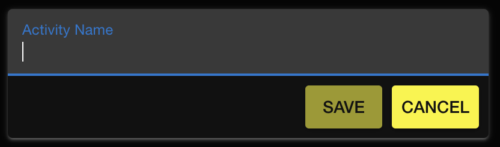
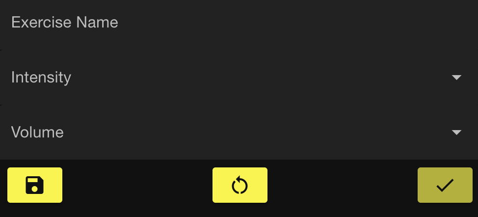
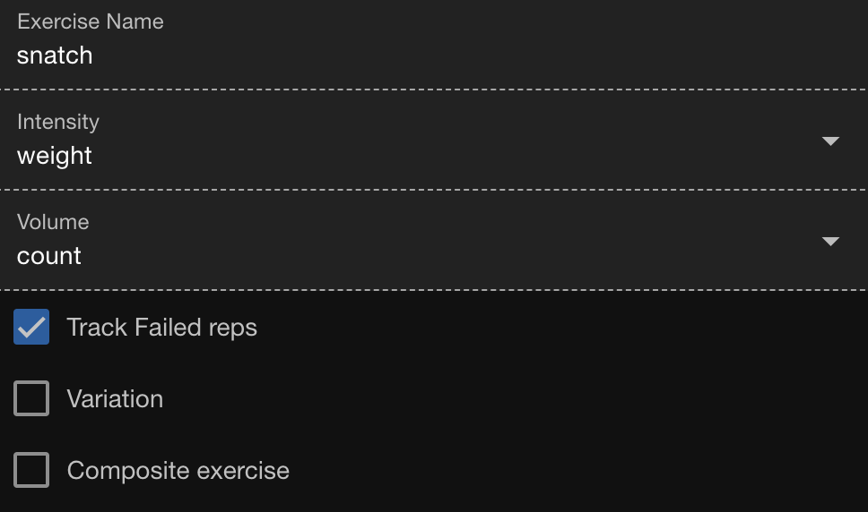
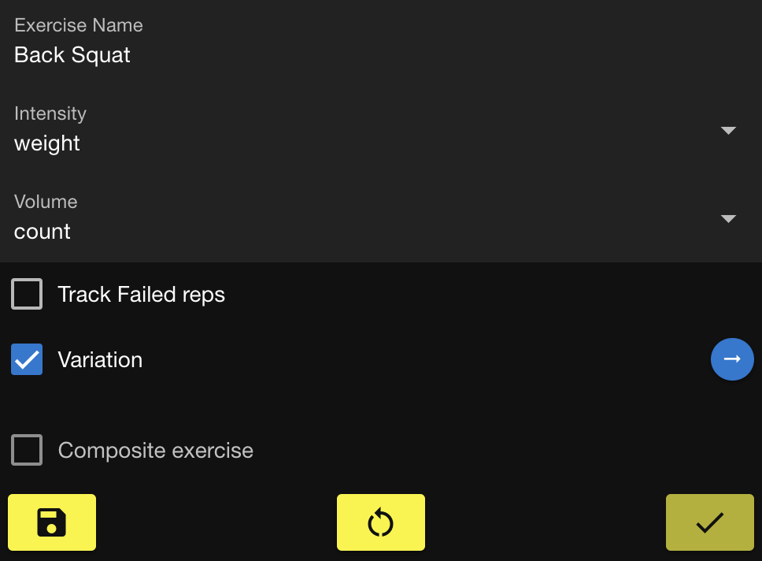
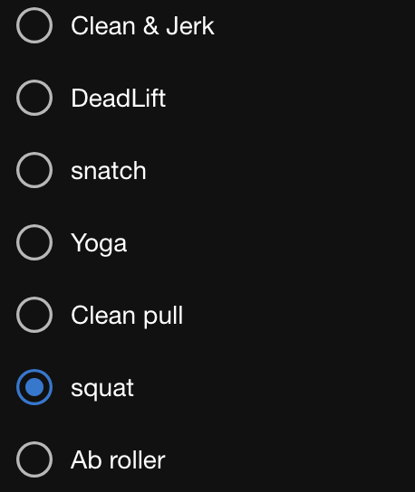
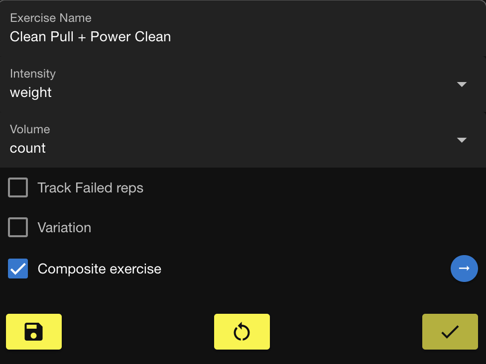
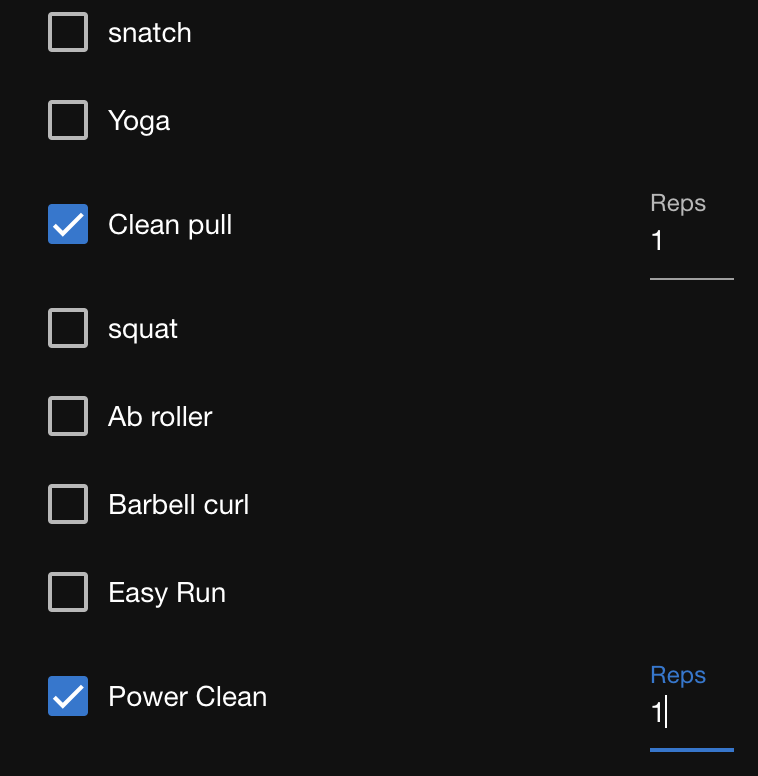
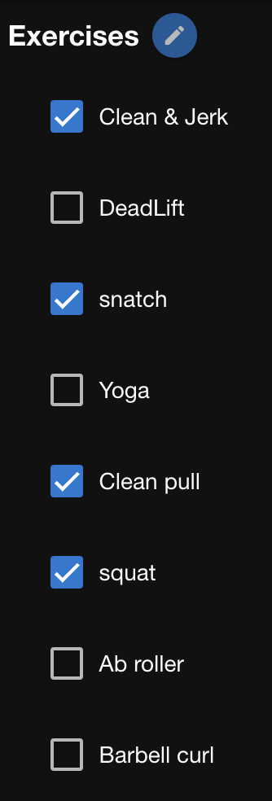

Prepare your activities
Before you log your workouts or create training programs, you need to create the activities and exercises that you perform. For example, a runner would create an activity called Running. Then, they would add different types of workouts and exercises that they perform such as Easy Jog, Threshold Run, Squats, and so on.
Create an activity
Name the activity that you participate in so that you can associate it with your programs and your training log.
You can create multiple activities for when you train for different sports at different times of the year. The training log and performance metrics for each activity are aggregated separately so that you can analyze your progress for one sport in isolation from the other. For example, if you train for 10k runs in the summer and 10k cross-country skiing in the winter, you could create a Running activity and a Skiing activity. However, a triathlete who swims, runs, and cycles during the same period would create only one activity named Triathlon.
- In the menu bar, click Activity > Activities.
- Click the + icon next to Activities.

- Enter the activity name and then click Save.

Create an exercise
Create an exercise that you perform during a workout so that you can track the volume of work that you perform with it. Examples of strength training exercises are Squat or Deadlift. Running exercises would be characterized by workout segments that are performed at different intensities such as Sprint, Threshold Run, or Easy Run.
In addition to the exercise name, you specify how to specify the intensity and volume. Several types of intensities and volume are provided that you use to configure your exercises. Strength training exercises typically use weight for intensity and count (i.e. sets and reps) for volume. For cardio, you might use RPE, heart rate, or pace as intensity and time or distance as the volume.
When an exercise that is tracked by counting reps is highly skill-based, it can be useful to record failed attempts. For example, you might want to record failed snatches to monitor your success rate. Failed attempts do not contribute to overall volume calculations.
Repeat the following steps for each exercise that you want to add. You don't have to add all of them at once; you can add exercises at any time.
- In the menu bar, click Activity > Exercises.
- Click the + icon next to Exercises.
- Enter a name, intensity type, and volume type.
 - For count volumes, select Track Failed Reps when monitoring failed attempts is important to you.

The Variation and Composite Exercise options are used to customize how volume is aggregated. See "Track Hidden Volume" below.
Track hidden volume
Exercises can be a variation of another exercise, or a combination of 2 or more exercises. You can configure these exercises so that their volume is included in the aggregate data of the exercises they are based on or comprised of. In this way, you can get a more accurate measure of volume for the base exercises.
When you configure an exercise as a variation or composite, volume that you already logged for the exercise is aggregated for the base exercises. You can configure variations and composites at any time.
Make an exercise variation
Configure an exercise as a variation of another exercise so that the volume of the variation contributes to the total volume of the base exercise. For example, you might want to aggregate the volume from all squat movements. You create the Squat exercise, as well as the Back Squat and the Front Squat. You configure both the Back Squat and the Front Squat to be variations of Squat. Now, the Squat volume includes the volume of the two Squat variations. The volume of Back Squats and Front Squats are also aggregated separately.
- On the menu bar, click Activity > Exercises.
- Select the exercise that you want to configure as a variation.
- Click the pencil icon next to Properties.

- Select Variation and then click the arrow icon that appears next to it.
 - Select the exercise of which the exercise you are configuring is a variation, and click Done.
 - Click the save icon.
Make a composite exercise
An exercise can be a composite of two or more exercises. Configure an exercise as a composite so that the volume performed for the composite is also counted for the exercises of which it is comprised. For example, a clean can be thought of as being comprised of a pull and a front squat. You create the Clean exercise and configure it to be a composite of the Pull and the Front Squat (or simply Squat, however you want to track your volume).
For each exercise that comprises the composite, you indicate the number of reps that are performed. Some weightlifting programs prescribe exercises as literal combinations, such as Clean + 2 Front squats. By indicating 2 reps for the front squat, when you log 1 rep of the Clean + 2 Front squat exercise, 2 reps for the Front Squat exercise is aggregated and one rep for the Clean exercise is aggregated.
- On the menu bar, click Activity > Exercises.
- Select the exercise that you want to configure as a composite.
- Click the pencil icon next the Properties.
- Select Composite Exercise and then click the arrow icon that appears next to it.

 - Select the exercises of which the exercise you are configuring is a composite.
- Next to each exercise, enter the number of reps that are performed.
 - Click Done.
- Click the save icon.
Add exercises to an activity
Configure an activity so that it includes the exercises that you perform for that activity. Exercises are available to all activities, so when you add one to an activity, it is still available to add to other activities. You can add or remove exercises at any time.
- In the menu bar, click Activity > Activity.
- Select the activity to configure and then click the pencil icon next to Exercises.
- Select the exercises to include.
 - Click the Save icon.